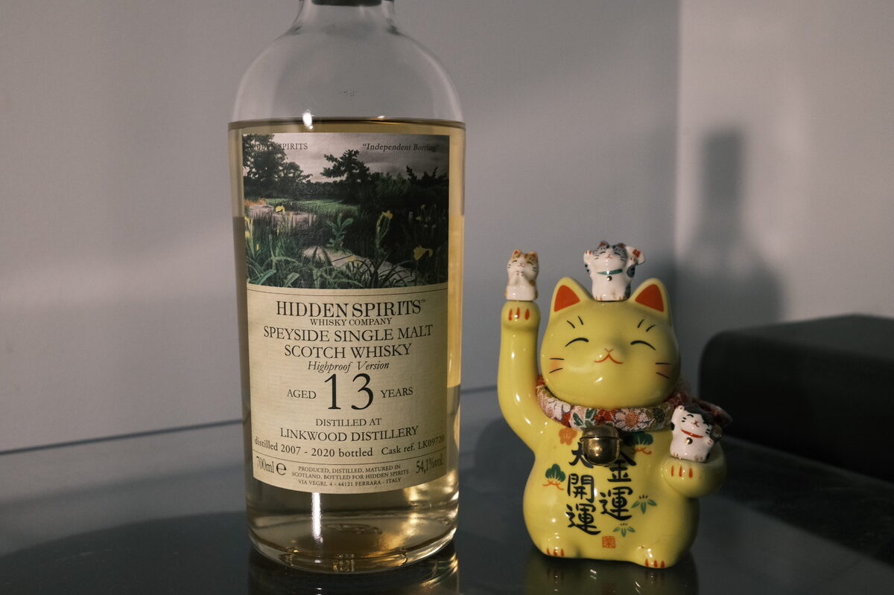

Linkwood 2007 Hidden Spirits 13 years 54.1% (refill exbourbon hogshead)
Linkwood is a distillery you don’t see often bottled by Diageo themselves. Fortunately it is a relatively common malt among independent bottlers. Here we’ve got one from Hidden Spirits, a small Italian independent bottler.
Colour Light straw.
Nose Rockmelon, flowers, caramel and basil. White wine: Viognier? Lemon candy. Fresh and grassy. A little stemmy – think an apple plus some greenery. Springtime. Whiffs of coconut and fresh marmalade on toast. Museli. As it sits the coconut gets stronger: lamingtons. Incredibly perfumed.
Palate Powerful stuff! Floral explosion. So bright and a little spicy – chilli heat. Lemons, bergamot, and more flowers. Into the malt. Thick: cookies and cake batter. Complements the acidity well. A little minerality, chalk. Interesting! Lightly honeyed and incredibly floral, woodsy – not oak, but a bit like a small overgrown garden. Orange peels. Something strongly alternative-medicinal: eucalyptus, tea tree oil. A little water emphasises these characters, plus a little pepper.
Finish Deeply warming and spicy. Floral. Hot honey and mulled wine: cinnamon, cloves. Ginger. Pawpaw and eucalyptus. Green apples and tropical fruits. Banana. Extremely long. Perhaps the warmest finish in recent memory. Gum leaves.
Comments This malt is insane. Unrepentantly distillate forward. Complex. Floral, citrusy, spice bomb. 91/100.

Posted by Dominic on 28 Apr 2021